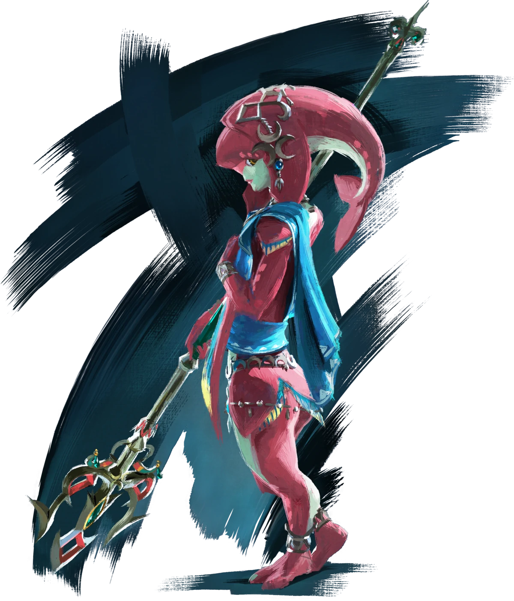

Link - Zelda: Breath of the Wild
Link has been asleep for 100 years, in a strange looking tomb of old
technology. He awakens to hear the voice of Zelda beckoning him to open his eyes and save the
land, to restore Hyrule. Exactly why Link was sleeping and where on the timelines this places
Link is still a mystery.

Mipha - Zelda: Breath of the Wild
Mipha is the Princess of the Zora, a friend of Link, and one of the Champions.
She is described as being introverted and has a gift for healing. Mipha was in love with Link
and made him Zora Armor before her death during the Great Calamity. Link later receives the
armor from Mipha’s father, King Dorephan.

Princess Zelda - Zelda: Breath of the Wild
Princess Zelda is often shown as a beautiful and elegant princess, with the
exception of Skyward Sword, where she is portrayed as an ordinary girl before the kingdom of
Hyrule had been established. Princess Zelda is one of the three most important characters of The
Legend of Zelda series, which is also why her name appears in the title of every game.

Urbosa - Zelda: Breath of the Wild
Urbosa is a Gerudo Champion who pilots the Divine Beast Vah Naboris. She is
capable of manipulating lightning using her technique, Urbosa’s Fury. Urbosa cares for Princess
Zelda like a sister with a strong core. According to the Gerudo child, Pearle, Urbosa once saved
Gerudo Town from an evil ghost.